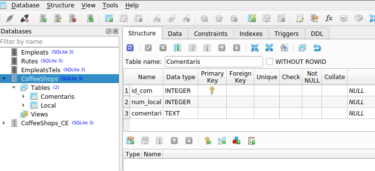
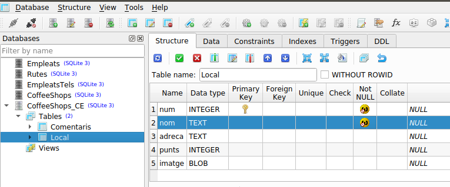
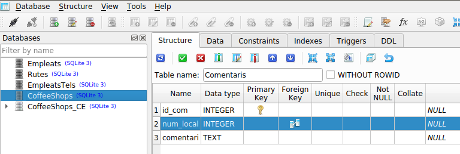
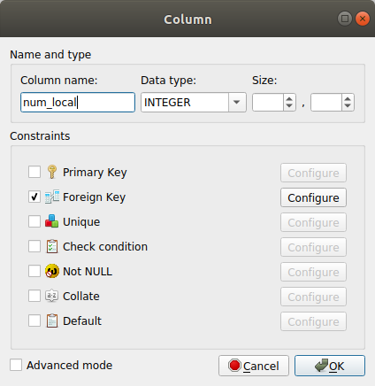
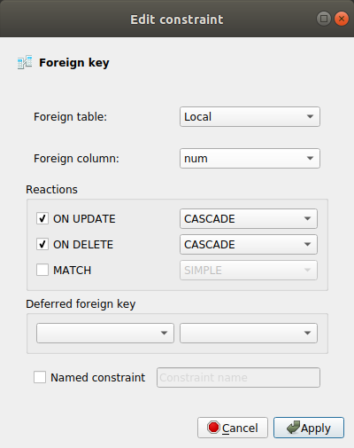
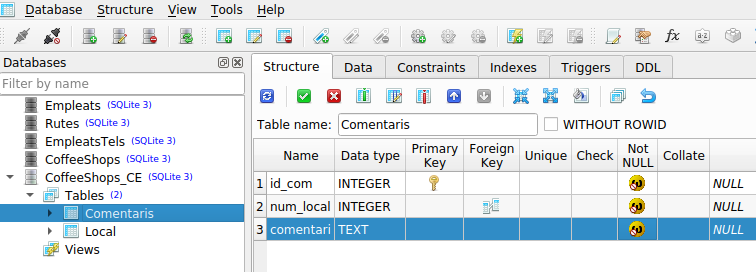

3.3 - Implementació amb les claus externes
Per senzillesa, havíem deixat de banda la implementació de les claus externes.
En cas que tinguem definida alguna clau externa, ens canviarà la definició de la classe associada a la taula on està la clau externa.
Anem a mostrar-ho sobre la mateixa Base de Dades de l'exemple anterior, CoffeeShop.sqlite, que de moment estava així:
LOCAL (num: Integer, nom: Text, adreca: Text, punts: Integer, imatge: Blob)
COMENTARI (id_com: Integer, num_local: Integer, comentari: Text)
No teníem definida la clau externa que va de num_local en COMENTARI a num en LOCAL, com mostra aquesta imatge de l'estructura en SQLIte Studio en què no hi ha res en l'apartat de Foreign Key del camp num_local:
:

on es pot comprovar que no tenim res en l'apartat Foreign Key del camp num_local.
Anem a aprofitar i fer algunes modificacions més, a banda de la clau externa. Anem a declarar alguns camps com a no nuls, per a veure l'efecte sobre les classes associades.
Us aconselle que si voleu provar els canvis següents, ho feu en una Base de Dades nova, copiada de CoffeeShops_Com.sqlite, amb el nom per exemple de CoffeeShops_Com_CE.sqlite, per a que l'exemple finalitzat en la pregunta 3.2 continue funcionant.
LOCAL
NO NUL
Declararem els camps num i nom com a no nuls. En el cas del primer, es pot interpretar com una redundància, perquè la clau principal no pot ser nula. Però declarar-la expressament com a no nul ens permetrà definir la classe associada com un camp no nul

es pot comprovar com hem declarat aquestos dos camps com a no nuls.
La declaració de la classe associada que és Coffee quedarà d'aquesta manera:
import androidx.room.ColumnInfo
import androidx.room.Entity
import androidx.room.PrimaryKey
@Entity(tableName="Local")
data class Coffee (
@PrimaryKey val num: Int,
@ColumnInfo(name = "nom") val title: String,
@ColumnInfo(name = "adreca") val subtitle: String?,
@ColumnInfo(name = "punts") val points: Int?,
@ColumnInfo(name = "imatge") val image: ByteArray?
)
Observeu com no tenim la interrogant als final de les propietats num i title
COMENTARI
NO NUL
Definirem tots els camps com a no nuls, ja que la clau principa no pot ser nula, el número de local tampoc hauria de ser nul (sinó tindríem un comentari que no es refereix a cap local) i el comentari millor que no siga nul (sinó no tenim comentari)

CLAU EXTERNA
Per a definir la clau externa, haurem d'especificar la taula i comp on apunta, i el comportament: en aquest cas hem triat ON DELETE CASCADE i ON UPDATE CASCADE, que vol dir que si s'actualitza o s'esborrar la fila de la taula principal (el Local) que s'actualitzen o s'esborren els comentaris associats. En les següents pantalles es veu com s'especifica:
|  |  |
I així ja es veu com està definida la clau externa i els camps no nuls:

Amb aquestos condicionants hem de modificar les anotacions de la classe Comment:
- Per a reflectir que els 3 camps són no nuls, llevarem la interrogant després del tipus de la propietat
- La clau externa la definim entre parèntesis després de @Entity. Serà dins un array on s'especifiquen les possibles claus externes (nosaltres només en tenim una) i hem de dir l'entitat principal, camp de la taula principal on apuntarà la clau externa (num), camp que és clau externa (num_local) i comportament
import androidx.room.ColumnInfo
import androidx.room.Entity
import androidx.room.ForeignKey
import androidx.room.PrimaryKey
@Entity(tableName="Comentaris",
foreignKeys = arrayOf(
ForeignKey(entity = Coffee::class,
parentColumns = arrayOf("num"),
childColumns = arrayOf("num_local"),
onDelete = ForeignKey.CASCADE,
onUpdate = ForeignKey.CASCADE)))
data class Comment (
@PrimaryKey @ColumnInfo(name = "id_com") val idCom: Int,
@ColumnInfo(name = "num_local") val numCoffee: Int,
@ColumnInfo(name = "comentari")val comm: String
)
Si voleu fer la comprovació que funciona no us oblideu de:
- Copiar la Base de Dades CoffeeShops_Com_CE.sqlite a l'apartat de Assets
- Modificar les línies 26 i 27 de FirstFragment.kt, que és on es defineix la Base de Dades pel nom actual: CoffeeShops_Com_CE.sqlite
Llicenciat sota la Llicència Creative Commons Reconeixement NoComercial CompartirIgual 2.5